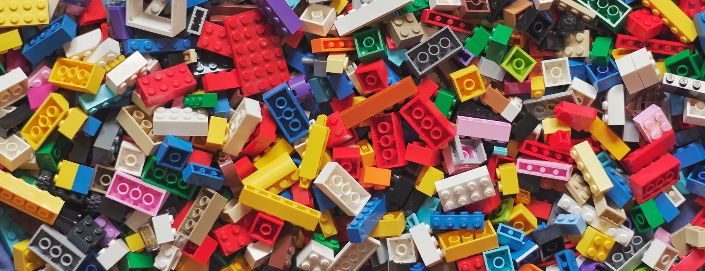
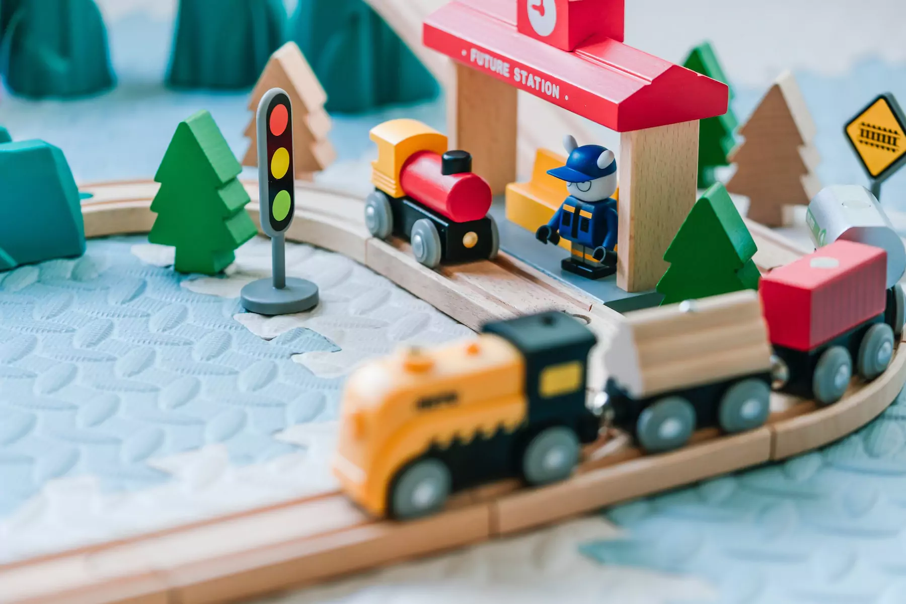

Через планові та аварійні відключення світла список домашніх розваг для дітей помітно скорочується. Доводиться викреслити з нього спілкування з друзями в месенджерах, перегляд мультиків та відеоблогів у режимі онлайн. Тож відкладаємо гаджети і беремо… конструктор. Як підібрати такий, з яким цікаво навіть у темряві? Зібрали 5 порад батькам, як обрати крутий дитячий конструктор.
За темою
Конструктор — це комплект різнокаліберних елементів, які потрібно з’єднувати між собою. Є універсальні набори, кінцевий результат збирання яких залежить виключно від фантазії дитини. Вони орієнтовані на малюків, які ще не вміють працювати з інструкцією та не можуть довго перебувати на одному місці. У старших дітей більше зацікавлення викликають конструктори з конкретною тематикою: присвячені діснеївським мультфільмам, комп’ютерним іграм, всесвіту Гаррі Поттера чи марвелівським супергероям.
Не треба керуватися гендерними стереотипами під час вибору серії: мовляв, дівчаткам — набори про Барбі та звіряток, а хлопчикам — роботи та перегонові автомобілі. Ліпше відштовхуватися від інтересів та уподобань дитини. А якщо хочеться зробити сюрприз, можна придбати універсальний конструктор Лего Транспорт, Лего Дісней, Лего Дотс чи Лего Класік.
За віком
Виробники встановлюють вікові обмеження на конструктори, щоб досягти «прямого влучання» в цільову аудиторію. Маркування на коробці дає зрозуміти, для кого саме створено іграшку.
- Конструктори 2+ та 3+ — для тодлерів. Вони без складних з’єднань та мініатюрних деталей, які можна проковтнути чи запхати до носа.
- 4+, 5+ — для непосидючих дошкільнят. Виготовлені з урахуванням особливостей дитячої психіки, тому на їхнє складання потрібно небагато часу. Пів години чи 40 хвилин — рівно стільки, скільки може сконцентровано просидіти на одному місці п’ятирічна дитина.
- Від 6+ до 10+ — для учнів молодшої школи. Зазвичай — з величезною кількістю корисних функцій. Тренують фантазію, творче мислення, логіку та кмітливість, позитивно впливають на комунікативні навички.
- Від 10+ до 14+ — помірно складні комплекти, за «будівництвом» яких можна провести кілька годин поспіль.
- 14+ — конструктори для вибагливих тінейджерів, яким важко догодити. До речі, для дорослих вони також підходять.
Конструктори сприяють розвитку дрібної моторики. Доводиться постаратися, щоб поставити детальку на своє місце. За поганого освітлення це подвійний квест. Якщо розвісити в дитячій гірлянди на батарейках та встановити діодні акумуляторні світильники, вдасться не лише полегшити завдання дитині, а й створити святкову атмосферу, навіть коли свята позаду.
За кількістю деталей
За якісного освітлення вмотивована дитина складе конструктор хоч і на кілька тисяч деталей. З портативною нічною лампою чи ліхтариком — інша річ. Годі чекати рекордної продуктивності, бо через брак світла темпи складання знижуються. Щоб гра з конструктором не перетворилася на тривалі та нудні «тортури», треба зупинитися на помірній кількості деталей. Залежно від віку дитини це може бути 50, 100, 200 чи 500–700.
За розміром деталей
Складати конструктори з дрібними елементами цікавіше. По-перше, потрібно докладати зусилля, правильно приєднуючи їх одну до одної. По-друге, довше зберігається інтрига — що ж вийде наприкінці.
Однак напівтемрява накладає свої обмеження, зокрема й тому, що маленькі запчастини легко загубити. Звідси висновок: оптимальними є середні розміри пластикових блоків.